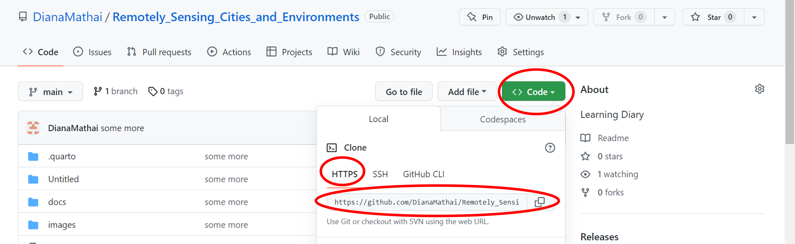
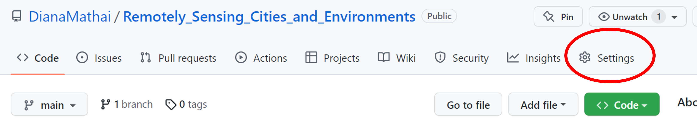
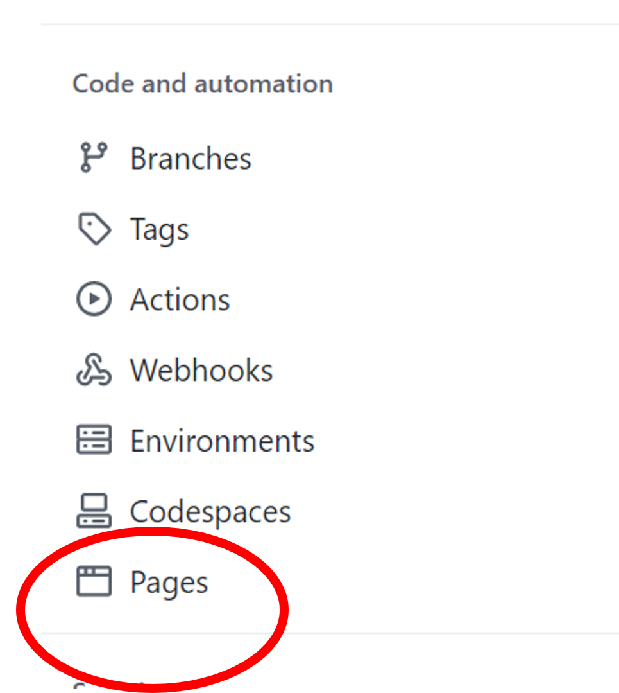
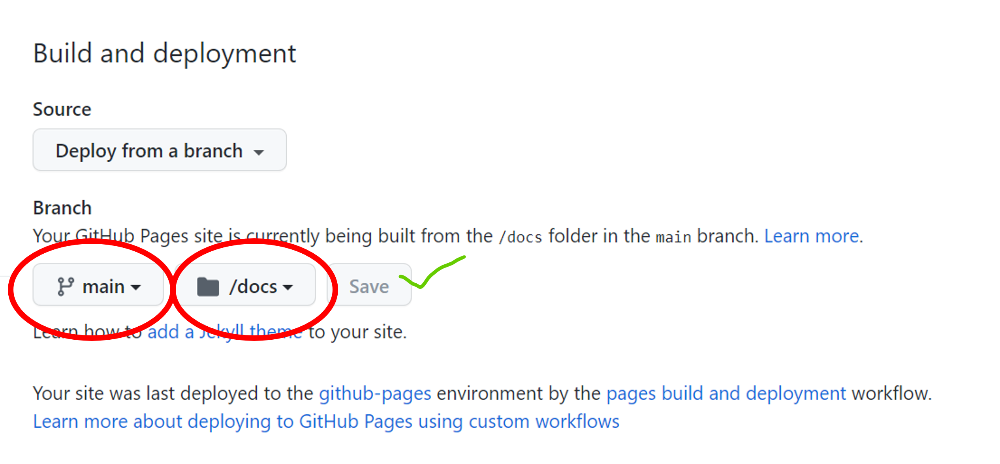
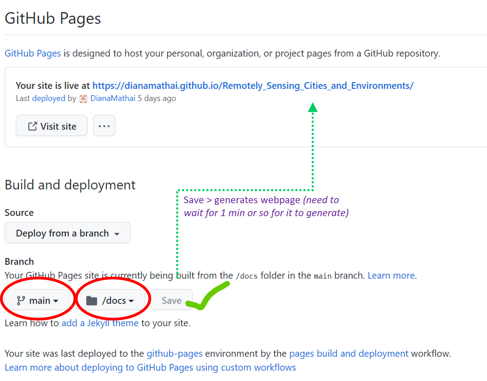
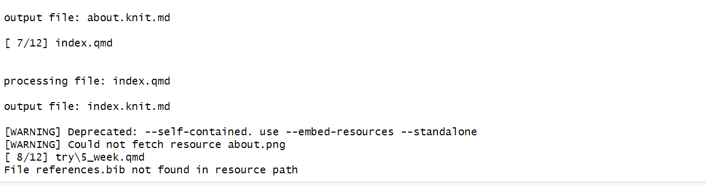
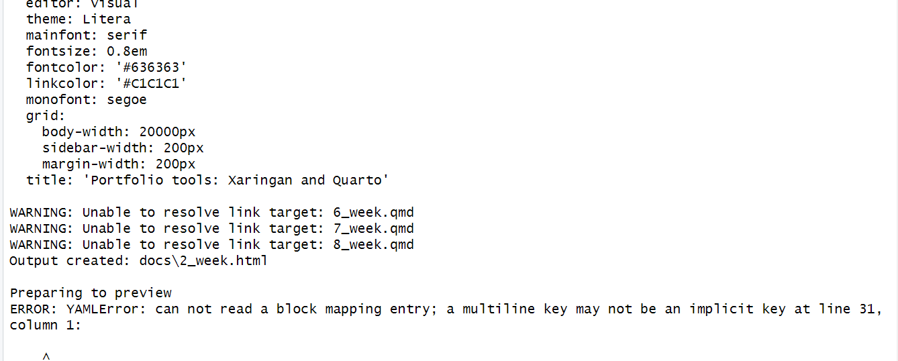

Portfolio tools: Xaringan and Quarto
This week learning Diary focuses on using Quarto to make a web-based learning Diary and a web based presentation using Xaringan asa medium.
- This webpage is a representation of a published website using quarto in RMarkdown on github.
Process of hosting on Github
Making A GitHub Repo
1. Make a GitHub repository
2. open terminal> navigate to the intended folder for the repo
- cd (insertfolder path)
3. In Terminal type:
git status >>output: fatal not a git repository……
git clone (repo link)

- A folder with the name of your online GitHub repo would be created in your local intended folder
- check git status again
- git status >>output: on branch main….you branch is upto date…….
Quarto and Xaringan
- For hosting a website published by quarto in RMarkdown on github and a web based presentation on Xaringan, indicated below are the resource references.
Resources referred:
- andrewmaclachlan.github (Flow of instructions _refer to instructions under (1) Quarto + Git and GitHub and (2) Xaringan + Git and GitHub)
- cran.r
- “Xaringan CSS Theme Generator” (n.d.)
- Ph.D (n.d.)
- “Making Slides with r Markdown” (n.d.)
- “Learning Xaringan Presentations” (n.d.)
- (helpme?):
- “Build Presentations in r” (n.d.)
- Grolemund (n.d.)
Hosting Quarto on GitHub
Below is an indicative representation of the process
Go to the intended GitHub repository on GitHub
Click on settings

Click on pages (left under Code and automation)

- Click on main, then on docs and save

- would create a weblink above (would take a minute or two to generate)

A small slide presentation(maximum 9 slide) and hosted on GitHub - Xaringan OUTPUT - SENSOR 🌝➡️ Sensor
Application:
- Making a publicly available document, that can grow with community contribution (only for GitHub users).
- Easily accessible to users with internet and basic web accessibility knowledge.
- Reproducible
- Requires moderate to high proficiency of the medium
- Interesting of individuals who love writing code, representing code, its output (maps, graphs, tables etc) and enjoy CSS- as this all outputs in a self contained web slide
Reflection:
- Benefits:
- Reproducible
- encourages collaboration and displays benefits of open source
- Enables users to use the medium to put things over internet.
- Dose not require in-depth knowledge of web-development to build a desired output.
- Resource to build one are easily accessible on web
- Drawbacks:
Requires internet accessibility
Requires proficiency of the medium
Not inclusive: as it targets a certain user type, cannot be used as a medium to engage contribution from learned diverse group with varying computer proficiency levels (would require capacity building).
Error:

- tools> global>change: [64-bit] C:\Program Files\R\R-4.2.2 to R-4.2.1
